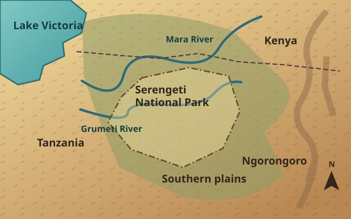

Serengeti field station · Unit 1 · Lesson 2
Serengeti Field Notebook
Why did people decide to protect the Serengeti? How did they decide what to protect?
Start with two questions
The Serengeti ecosystem extends into Tanzania and Kenya. The national park protects part of that wider ecosystem.
Read a short history before exploring
Communities including the Ikoma, Nata, and Maasai hunted, farmed, and raised livestock in the region.
Serengeti National Park was established under British colonial rule. People disagreed about who could live or work inside protected areas.
Researchers began documenting the movement of herds. Their evidence showed that animals regularly moved beyond the park.
Tanganyika gained independence, then united with Zanzibar to form Tanzania.
Watch: Introduction to the Serengeti
Look for one feature of the land and one sign of animal or human activity. If video is blocked, use the history and station cards instead.
Two different questions unlock the stations.
Explore five evidence stations
Open a numbered marker on the map or choose a station below. Pick the stations that help answer your questions. Pin evidence or write notes from at least two different stations. You don’t need to visit them all.

Watch: Field clip 1 from the animal movement station
Watch: Field clip 2 from the animal movement station
Watch: Field clip from the people station
Explain and share your evidence
Organize noticings and wonderings for group discussion
Your notes stay in this browser unless you download a report.
Evidence sources and map limits
OpenSciEd B.1 Lesson 2: A Brief History of the Serengeti, the lesson slides and map, and the Scavenger Hunt Images station deck. The lesson sources include A. R. E. Sinclair (2021), A Place Like No Other, and J. B. Shetler (2007), Imagining Serengeti. This activity paraphrases the classroom cards. The original digital map places features approximately and is not a survey, an exact historical park map, or a record of animal tracking.